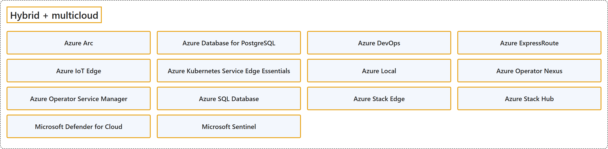

21. Hybrid + Multicloud
Classification

Glossary
| Term | Definition | 中文翻译 | Source |
|---|---|---|---|
| Hybrid + multicloud 混合 + 多云 |
"Hybrid cloud computing combines public cloud computing with on-premises infrastructure, or the private cloud, into an integrated environment." "Multicloud refers to the use of cloud services from multiple cloud providers to manage the demands of different workloads." | 混合云计算把公有云计算与本地基础结构（或私有云）结合成一个集成环境。多云指使用多个云提供商的云服务来满足不同工作负载的需求。 | Microsoft, n.d.-b, "Hybrid cloud definition" section, para. 1; FAQ 03 |
| Azure Arc Azure Arc |
"Azure Arc simplifies governance and management by delivering a consistent multicloud and on-premises management platform." | Azure Arc 通过提供一致的多云和本地管理平台来简化治理和管理。 | Microsoft, 2025a, para. 2 |
| Azure Database for PostgreSQL Azure PostgreSQL 数据库 |
"Azure Database for PostgreSQL is a fully managed database service that gives you granular control and flexibility over database management functions and configuration settings." | Azure Database for PostgreSQL 是一种完全托管的数据库服务，让你对数据库管理功能和配置设置拥有精细的控制和灵活性。 | Microsoft, 2026b, para. 2 |
| Azure DevOps Azure DevOps |
"Azure DevOps is a cloud-based platform that provides integrated tools for software development teams." | Azure DevOps 是一个基于云的平台，为软件开发团队提供集成工具。 | Microsoft, 2026c, para. 1 |
| Azure ExpressRoute Azure ExpressRoute |
"ExpressRoute lets you extend your on-premises networks into the Microsoft cloud over a private connection with the help of a connectivity provider." | ExpressRoute 让你借助连接服务提供商，通过专用连接把本地网络扩展到 Microsoft 云中。 | Microsoft, 2026d, para. 1 |
| Azure IoT Edge Azure IoT 边缘 |
"Azure IoT Edge is a device-focused runtime that enables you to deploy, run, and monitor containerized Linux applications, bringing analytics closer to your devices for faster insights and offline decision-making." | Azure IoT Edge 是一个面向设备的运行时，让你可以部署、运行和监视容器化的 Linux 应用程序，把分析带到更靠近设备的地方，以便更快地获得见解并离线做出决策。 | Microsoft, 2026e, para. 1 |
| Azure Kubernetes Service Edge Essentials Azure Kubernetes 服务 Edge Essentials |
"Azure Kubernetes Service Edge Essentials is an on-premises Kubernetes implementation of Azure Kubernetes Service (AKS) that automates running containerized applications at scale." | Azure Kubernetes Service Edge Essentials 是 Azure Kubernetes Service（AKS）的一种本地 Kubernetes 实现，它自动化大规模运行容器化应用程序。 | Microsoft, 2026a, para. 1 |
| Azure Local Azure 本地 |
"Azure Local is Microsoft's distributed infrastructure solution that extends Azure capabilities to customer-owned environments." | Azure Local 是 Microsoft 的分布式基础结构解决方案，它把 Azure 功能扩展到客户自有的环境中。 | Microsoft, 2026f, para. 1 |
| Azure Operator Nexus Azure 运营商关系 |
"Azure Operator Nexus is a carrier-grade, next-generation hybrid cloud platform for telecommunication operators." | Azure Operator Nexus 是一个面向电信运营商的运营商级下一代混合云平台。 | Microsoft, 2025c, para. 1 |
| Azure Operator Service Manager Azure 操作员服务管理器 |
"Azure Operator Service Manager is a cloud orchestration service designed to automate lifecycle management of complex mobility workloads hosted on Azure Operator Nexus." | Azure Operator Service Manager 是一项云编排服务，旨在自动化复杂移动工作负载的生命周期管理，这些工作负载托管在 Azure Operator Nexus 上。 | Microsoft, 2025d, para. 1 |
| Azure SQL Database Azure SQL 数据库 |
(context) "This article provides an overview of Azure SQL Database, a fully managed platform as a service (PaaS) database engine that handles most of the database management functions such as upgrading, patching, backups, and monitoring without user involvement." | （语境）本文概述 Azure SQL Database，它是一个完全托管的平台即服务（PaaS）数据库引擎，无需用户参与就能处理大部分数据库管理功能，例如升级、修补、备份和监视。 | Microsoft, 2026g, para. 1 |
| Azure Stack Edge Azure Stack 边缘 |
(context) "Azure Stack Edge Pro with GPU is an AI-enabled edge computing device with network data transfer capabilities." | （语境）Azure Stack Edge Pro with GPU 是一种支持 AI 的边缘计算设备，具有网络数据传输功能。 | Microsoft, 2025e, para. 1 |
| Azure Stack Hub Azure Stack Hub |
"Azure Stack Hub is an extension of Azure that provides a way to run apps in an on-premises environment and deliver Azure services in your datacenter." | Azure Stack Hub 是 Azure 的扩展，它提供一种方式，让你在本地环境中运行应用，并在你的数据中心提供 Azure 服务。 | Microsoft, 2025b, para. 1 |
| Microsoft Defender for Cloud Microsoft Defender for Cloud |
"Microsoft Defender for Cloud is a Cloud Native Application Protection Platform (CNAPP), which is a unified solution that combines multiple cloud security tools to protect applications across their entire lifecycle." | Microsoft Defender for Cloud 是一个云原生应用程序保护平台（CNAPP），这是一种统一的解决方案，它结合多种云安全工具，在应用程序的整个生命周期中保护应用程序。 | Microsoft, 2026h, para. 1 |
| Microsoft Sentinel Microsoft Sentinel |
"Microsoft Sentinel is a cloud-native SIEM solution that delivers scalable, cost-efficient security across multicloud and multiplatform environments." | Microsoft Sentinel 是一种云原生 SIEM 解决方案，在多云和多平台环境中提供可扩展、经济高效的安全性。 | Microsoft, 2026i, para. 1 |
Coverage
| Certification | Skill area |
|---|---|
| AZ-400 Designing and Implementing Microsoft DevOps Solutions | Design and implement build and release pipelines (50–55%) Design and implement processes and communications (10–15%) Develop a security and compliance plan (10–15%) Implement an instrumentation strategy (5–10%) |
| AZ-500 Microsoft Azure Security Technologies | Secure Azure using Microsoft Defender for Cloud and Microsoft Sentinel (30–35%) |
References
- Microsoft. (n.d.-a). Azure documentation. Microsoft Learn. Retrieved October 25, 2026, from https://learn.microsoft.com/en-us/azure/
- Microsoft. (n.d.-b). What is a hybrid cloud? Microsoft Azure. Retrieved October 26, 2026, from https://azure.microsoft.com/en-us/resources/cloud-computing-dictionary/what-is-hybrid-cloud-computing
- Microsoft. (2025a, August 26). Azure Arc overview. Microsoft Learn. https://learn.microsoft.com/en-us/azure/azure-arc/overview
- Microsoft. (2025b, May 8). Azure Stack Hub overview. Microsoft Learn. https://learn.microsoft.com/en-us/azure-stack/operator/azure-stack-overview
- Microsoft. (2025c, September 17). What is Azure Operator Nexus? Microsoft Learn. https://learn.microsoft.com/en-us/azure/operator-nexus/overview
- Microsoft. (2025d, November 1). What is Azure Operator Service Manager? Microsoft Learn. https://learn.microsoft.com/en-us/azure/operator-service-manager/azure-operator-service-manager-overview
- Microsoft. (2025e, January 10). What is Azure Stack Edge Pro with GPU? Microsoft Learn. https://learn.microsoft.com/en-us/azure/databox-online/azure-stack-edge-gpu-overview
- Microsoft. (2026a, September 3). AKS Edge Essentials. Microsoft Learn. https://learn.microsoft.com/en-us/azure/aks/hybrid/aks-edge-overview
- Microsoft. (2026b, January 9). What is Azure Database for PostgreSQL flexible server? Microsoft Learn. https://learn.microsoft.com/en-us/azure/postgresql/overview
- Microsoft. (2026c, March 9). What is Azure DevOps? Microsoft Learn. https://learn.microsoft.com/en-us/azure/devops/user-guide/what-is-azure-devops?view=azure-devops
- Microsoft. (2026d, August 27). What is Azure ExpressRoute? Microsoft Learn. https://learn.microsoft.com/en-us/azure/expressroute/expressroute-introduction
- Microsoft. (2026e, April 13). What is Azure IoT Edge. Microsoft Learn. https://learn.microsoft.com/en-us/azure/iot-edge/about-iot-edge
- Microsoft. (2026f, April 22). What is Azure Local? Microsoft Learn. https://learn.microsoft.com/en-us/azure/azure-local/overview
- Microsoft. (2026g, October 13). What is Azure SQL Database? Microsoft Learn. https://learn.microsoft.com/en-us/azure/azure-sql/database/sql-database-paas-overview?view=azuresql
- Microsoft. (2026h, August 10). What is Microsoft Defender for Cloud? Microsoft Learn. https://learn.microsoft.com/en-us/azure/defender-for-cloud/defender-for-cloud-introduction
- Microsoft. (2026i, May 14). What is Microsoft Sentinel security information and event management (SIEM)? Microsoft Learn. https://learn.microsoft.com/en-us/azure/sentinel/overview